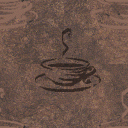
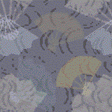
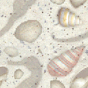

Tiled backgrounds from Windows
I opened several Virtual Hard Disks (.vhd) with old versions of windows installed in 7-zip to extract tiled backgrounds from the windows backgrounds folder.
From:
- Windows 9x
- Early Windows NT
- Windows 3.x ?
Here they are:











Last but not least:

Upload: 15 October 2018
Last update: 15 October 2018